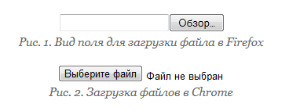
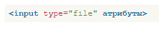
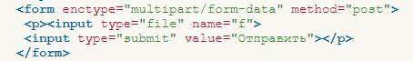
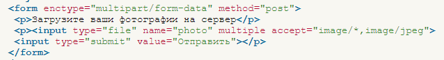

Загрузка файлов
Для того, чтобы можно было загружать на сервер один или несколько файлов, в форме применяется специальное поле. В браузерах Firefox, IE и Opera такой элемент отображается как текстовое поле, рядом с которым располагается кнопка с надписью «Обзор...» (рис. 1). В Safari и Chrome доступна только кнопка «Выберите файл» (рис. 2).

При нажатии на кнопку открывается окно для выбора файла, где можно указать, какой файл пользователь желает использовать.
Синтаксис поля для отправки файла следующий.

Атрибуты перечислены в табл. 1.
| Атрибут | Описание |
|---|---|
| accept | Устанавливает фильтр на типы файлов, которые вы можете отправить через поле загрузки файлов. |
| size | Ширина текстового поля, которое определяется числом символов моноширинного шрифта. |
| multiple | Позволяет выбирать и загружать сразу несколько файлов. |
| name | Имя поля, используется для его идентификации обработчиком формы. |
Прежде, чем использовать данное поле, в форме необходимо сделать следующее:
- задать метод отправки данных POST (method="post");
- установить у атрибута enctype значение multipart/form-data.
Форма для загрузки файла продемонстрирована в примере 1.
Пример 1. Создание поля для отправки файла

Хотя можно установить ширину поля через атрибут size, в действительности ширина никак не влияет на результат работы формы. В браузерах Safari и Chrome этот атрибут вообще никакого воздействия не оказывает.
Атрибут multiple более важен, он позволяет не ограничиваться одним файлом для выбора, а указать их сразу несколько для одновременной загрузки.
Если атрибут accept не указывать, тогда добавляются и загружаются файлы любого типа. Наличие accept позволяет ограничить выбор файла, что особенно важно, когда требуется загрузить только изображение или видео.
В качестве значения выступает MIME-тип, несколько значений разделяются между собой запятой. Также можно использовать следующие ключевые слова:
- audio/* — выбор музыкальных файлов любого типа;
- image/* — графические файлы;
- video/* — видеофайлы.
В табл. 2 показаны некоторые допустимые значения атрибута accept.
| Значение | Описание |
|---|---|
| image/jpeg | Только файлы в формате JPEG. |
| image/jpeg,image/png | Только файлы в формате JPEG и PNG. |
| image/* | Любые графические файлы. |
| image/*,video/* | Любые графические и видеофайлы. |
Использование дополнительных атрибутов показано в примере 2.
Пример 2. Загрузка фотографий

Не все браузеры поддерживают новые атрибуты. IE полностью игнорирует multiple и accept, Safari не поддерживает accept, а Firefox не работает с MIME-типом, только с ключевыми словами. Поэтому в примере выше специально для Firefox установлено значение image/*,image/jpeg. Также учтите странную ошибку в Опере, она не допускает пробелы после запятой внутри accept.